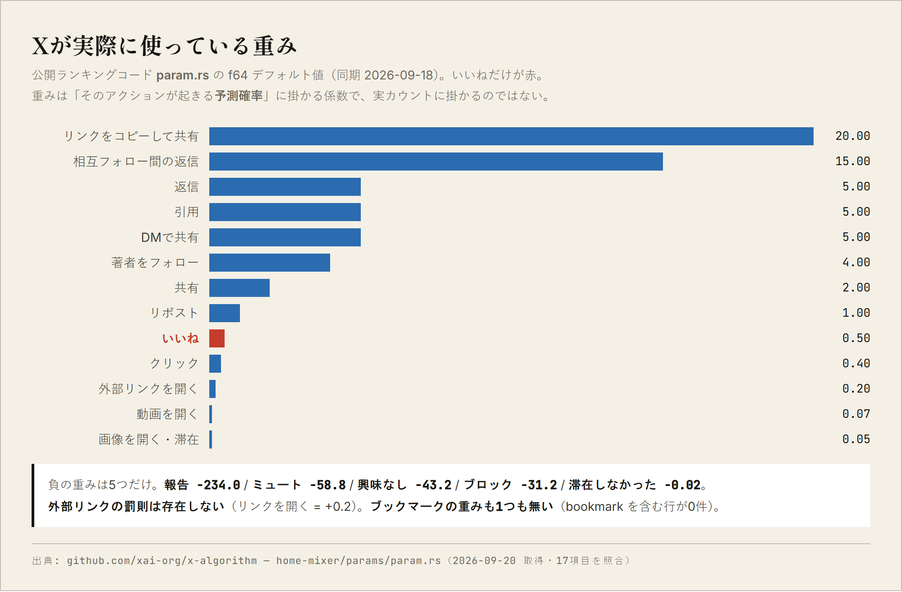
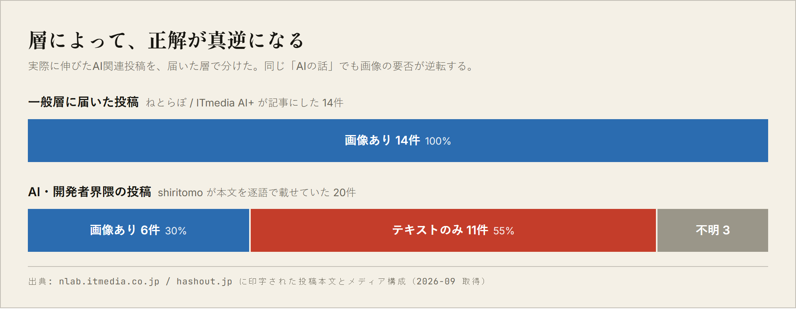
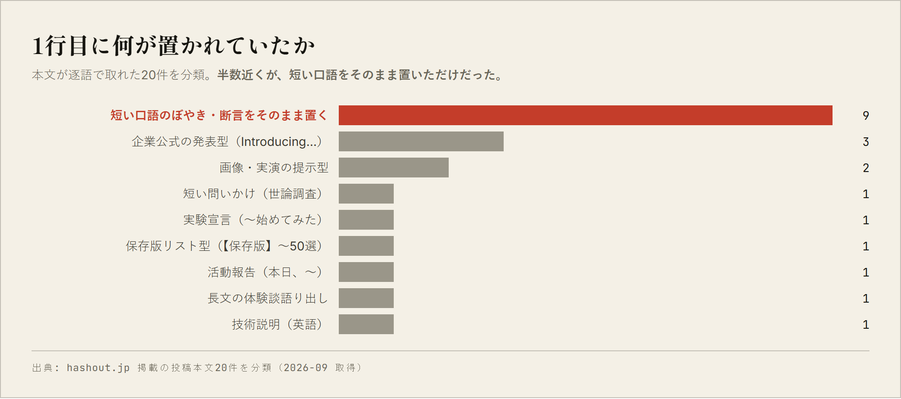

Xの測り方 — 拡散の通説を、公開コードで検算する
自分の過去投稿を並べて型を作ったら、それらしいものが出来てしまいました。 公開されているランキングコードと、実際に伸びた投稿44件に当ててみたら、ほとんど外れていた。 自分の履歴の中には、自分が届いていない場所のデータが無い。 どこが外れていたかを、検算できる形で置いておきます。
最初にやったのは、自分の過去投稿を並べて共通点を探すことでした。 文の長さ、語尾、1行目の置き方。出てきた数字はどれも本物です。 そこから「通説を書く → 否定する → 理由を書く → 言い換えて締める」という4行の型を作りました。
ここに穴があります。自分の履歴には、自分が届かなかった場所のデータが入っていません。 伸びなかった投稿の共通点は分かりますが、伸びた投稿がどういう形をしているかは、自分が伸ばしたことがなければ分からない。 平均から上へ抜ける方法を、平均の内側だけを見て探していたことになります。
そこで根拠を外に移しました。使ったのは2つです。 ひとつはXが公開しているランキングコード。もうひとつは、 媒体が記事として本文と反応数を印字していたAI関連投稿44件です。
Xは2026年1月にランキングをGrokベースへ刷新し、実装の公開と月次開示を表明しています。
重みは home-mixer/params/param.rs にそのまま置いてあります。取得して17項目を照合しました。

param.rs の f64 デフォルト値（同期 2026-09-18、2026-09-20 取得）。いいねは下から5番目。棄却されたのは次の3つです。どれも解説記事で何度も読んだものでした。
param.rs に Bookmark の重みは1つも無い。
bookmark を含む行が0件。「いいねの◯倍」という言い方の根拠が、少なくともこのファイルには無い。OpenLinkWeight = +0.2 とプラス。負の重みは5つだけで、リンク関連は含まれない。One common misinterpretation is that you can read these weight ratios as count equivalences, e.g. the incorrect statement that "one report cancels 468 likes" -- this is incorrect because the weights apply to the predicted probabilities rather than raw counts.
つまり重みは、そのアクションが起きる「予測確率」に掛かる係数であって、 実際の件数に掛かるのではない。倍率をそのまま件数の交換比率として読むと間違えます。
そのうえで、値そのものは意味を持ちます。返信5.0・引用5.0に対して、いいねは0.5。 相互フォロー間の返信にはさらに +15.0 が乗る。 いいねを集めにいく設計と、返信や引用を呼ぶ設計は、同じものではありません。
ただし、ここで話を終わらせると嘘になります。外部リンクは、実測では明らかに効いています。 同一記事で本文にリンクを置いた場合と返信に置いた場合を比べた記録では、3日間で 4,034インプ対 30,184インプと7.5倍の差が出ています。 投稿あたりの平均インプが 6,900 から 500 へ落ちたという報告もある。
公開コードで説明できないのに、実測では差が出る。 この食い違いを埋める材料を私は持っていません。 だから「本文にリンクを置かないほうが良さそうだが、理由は分かっていない」以上のことは書きません。
次に、実際に伸びた投稿を集めました。一般層に届いたもの（ねとらぼ / ITmedia AI+ が記事にした14件）と、 AI・開発者界隈のもの（本文が逐語で載っていた20件）に分かれます。 この2つで、画像の要否が逆転していました。

一般層に届いた14件は、14件すべてに画像か動画があります。枚数は1〜3枚が最頻で、4枚以上は1件もない。 規模も桁が違っていて、最大は2,646万表示・7万5,000いいね。題材は「AIで遊んだ」「AIが変な答えを返した」に集中しています。
一方、AI・開発者界隈で伸びていた投稿は55%がテキストのみでした。 いいね上位はほぼ全部メディアなしです。8,700いいね・63万インプの投稿も、3,000いいね超の投稿も、画像がない。
ここから言えるのは、「画像を付けるべきか」という問いに一般解が無いということです。 どちらの層に出すのかを先に決めないと、この問いには答えられません。
本文が逐語で取れた20件について、1行目に何を置いているかを分類しました。

最多は「短い口語のぼやき・断言を、そのまま置く」が9件。 解説も教訓も付いていません。言い切って、そこで終わっています。
私が自分の履歴から作った「通説 → 否定 → 理由 → 言い換え」の4行型は、 44件のどれにも現れませんでした。 4行目で結論を言い換えて締める形は、読み物としては整いますが、実際に伸びている投稿はそこを整えていない。
「【速報】【驚愕】【超朗報】」の型も同じでした。推奨している解説記事は多いのに、 44件中2件しかありません。そしてその解説記事に実測データは載っていませんでした。
もうひとつ、自分で作った型が間違えていた点があります。私は「1行目に自分の体験を書くな」と決めていました。 同じ作業をしている人にしか届かないからです。
ところが実例では、伸びている投稿の多くが体験から始まっています。 一般層に届いた5件は5件とも一人称の体験・行動で始まっており、AIの解説や評価で始まるものは1件もない。 界隈側で最も伸びていたのも、現場で起きた理不尽をそのまま書いた一文でした。
分類し直すと、線はここにありました。
体験そのものは問題ではない。自分の作品の話だけが伸びていない。 条件は「読んだ人が、自分にも起きたことだと思えるか」の一点です。 前者は読者の既知の痛みに乗るので、フォロワー数に依存しません。後者は依存します。
これは私にとって都合の悪い結論でした。書きたいのは作ったものの話だからです。 出すとしたら、紹介としてではなく、手順か実物として出すしかない。
テキストのみ・単発。飾らない口語で、起きたことだけ。解説も教訓も付けない。
根拠: 界隈系20件中9件がこの型で、いいね単価が最も高い。 「技術的に不可能と回答した要件に、でもGeminiは出来ると言われた」という一文が 8,700いいね・1,600リポスト・63万インプ。メディアなし、数字ゼロ。
動画か画像。本文にコピーできるプロンプトやコマンドを丸ごと置く。
根拠: 16歳が作ったCLIのデモが100万表示・1,500いいね。 プロンプト全文を本文に置いた投稿は 919いいね に対して保存1,087。 いいねより保存が多いのは、後で再現する意図の表れ。
画像1枚と一行だけ。解説しない。
根拠: 同じ記事内での比較 — 公式発表を紹介した投稿が1,100いいね、個人が自分の CLAUDE.md を晒した投稿が2,291いいね。 本文は一行だけだった。実物は世界に1つしかないので、フォロワー数と無関係に価値がある。
何が起きたか＋数字を含む帰結。感想を足さない。ソースは返信に置く。
根拠: 同じ事件で、英語の原投稿が500いいね超だったのに対し、 日本語2行に圧縮した投稿が2,000いいね超で日本語圏拡散の起点になっていた。 英語圏と日本語圏の数時間〜1日の時差は、小さなアカウントでも埋められる。
断言する。「人による」を書かない。反論が書きやすい余白を残す。
根拠: 247いいね に対して引用124件で33万インプに達した例がある。 いいね率が低くてもインプは伸びる。返信5.0・引用5.0・いいね0.5 という重みと噛み合う。 ただしミュート -58.8、報告 -234.0 と負の値は桁が大きいので、対象は人でなく事象に向ける。
x.com への直接アクセスは全てHTTP 402で失敗しました。よって
反応数の一次データは1件も取れていません。
44件の数値はすべて、媒体の記事に印字されていた値です。計測時点も不明。
一次ソースを自分で踏めたのは param.rs の17項目だけです。
集めたのは「媒体が記事にした投稿」であって、X全体の代表標本ではありません。 記事になりやすい投稿に偏っています。1行目の分類は n=20、一般層の分類は n=5 で、 統計的な主張ができる規模ではありません。
Xは2026年1月にランキングをGrokベースへ刷新しています。param.rs の値も変わりえます。
この記事の数値は2026-09-20時点のものです。
自分の履歴から作った型は、自分が届いた範囲の形しか持っていません。
そこから外へ出る方法は、そこには入っていない。
測る対象を、自分の外に置くしかない。
判定できないものを評価する方法は 門外漢の目利き に、 静かに壊れる不具合の捕まえ方は 品質検問 に、 他の型は 新しい形の研究 に置いています。